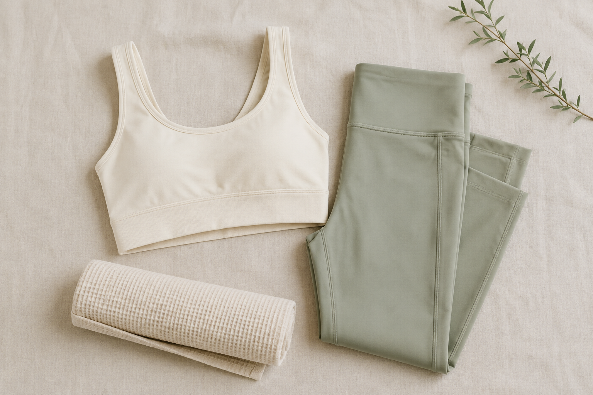

WEAR
形から入るのは、
間違っていない。
運動が続かない理由に、着るものが含まれていることがあります。鏡に映る自分が気に入らないと、通うのが苦痛になります。

ただし最初に全部そろえないでください。続くかどうか分からない段階で数万円使うと、やめたときの損失が大きくなります。まず2セットで始めて、続いてから足すのが確実です。
最初に必要なもの
| もの | 必要度 | 補足 |
|---|---|---|
| トップス2枚 | 必須 | 洗濯の周期を考えると2枚は要ります |
| レギンスまたはパンツ2本 | 必須 | 体のラインを見るならレギンス |
| スポーツブラ | 必須 | 普通の下着では代用できません |
| シューズ | 施設による | ホットヨガは不要。ジムは必要 |
| タオル | 施設による | レンタルがある店舗も多い |
ホットヨガ（LAVAなど）とパーソナルジム（ELEMENTなど）はレンタルがあるので、手ぶらで始められます。買う前に確認してください。
選ぶときの基準
- 体のラインが見えるものを選ぶ。隠れる服だと変化が分かりません。分からないと続きません
- 洗濯機で洗えるか確認する。手洗いが必要なものは、そのうち着なくなります
- 色は暗めから。汗が目立ちにくく、人の目が気になる段階では入りやすい
- 高いものを1着より、手頃なものを2着。洗濯が回らないと通う頻度が落ちます
そろえる

買う前に体験してみる
そもそもどの形式が合うか決まっていない段階なら、レンタルのある施設で先に試してください。ウェアを買ってから「オンラインのほうが合っていた」と気づくより順番が良い。
次に読む